My Training
Suivi de progression
Séance
00:00
Repos
—
Exercices
0
Programme
Volume
Temps
Programmes
Jours d'entraînement
Effacer tout
Ajouter des exercices
Aucun exercice
Ajoute ton premier exercice ci-dessus
Volume Musculaire
Séries hebdomadaires par groupe
Aucun exercice
Ajoute des exercices dans Programme
Chronomètre
Séance
00:00
PRÊT
Démarrer
Récupération
Repos
Active les notifications pour être averti(e) quand le repos est fini.
Activer
90
PRÊT
Lancer
Annuler
Confirmer
Choisir un muscle
✕
Séance
Volume
Timer